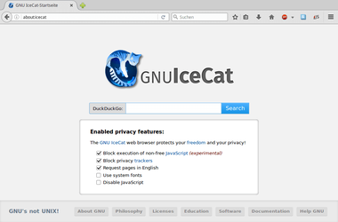

IceCat
Dieser Artikel wurde für die folgenden Ubuntu-Versionen getestet:
Ubuntu 16.04 Xenial Xerus
Ubuntu 14.04 Trusty Tahr
Zum Verständnis dieses Artikels sind folgende Seiten hilfreich:
Root-Rechte erlangen, optional
Ein Terminal öffnen, optional
Einen Programmstarter erstellen, optional
Eine Datei ausführbar machen, optional
GNU IceCat  ist eine Variante des Browsers Firefox und wie Debians Iceweasel "echte" freie Software. Das Programm basiert auf der ESR-Version von Firefox (vergleichbar mit LTS bei Ubuntu).
ist eine Variante des Browsers Firefox und wie Debians Iceweasel "echte" freie Software. Das Programm basiert auf der ESR-Version von Firefox (vergleichbar mit LTS bei Ubuntu).
Der Quellcode von Firefox ist zwar ebenfalls frei verfügbar, jedoch werden die Binär-Dateien des Firefox-Browsers mit nichtfreien Bestandteilen kombiniert zum Herunterladen angeboten. IceCat verzichtet beispielsweise auf die Integration von DRM oder Encrypted Media Extensions (EME).
|  |
| IceCatHome |
Des Weiteren sind bei IceCat zusätzliche Erweiterungen vorinstalliert, die zwar die Sicherheit und Privatsphäre des Nutzers erhöhen, aber die praktische Nutzung beeinträchtigen können:
IceCatHome - eine spezielle Startseite, die über die Pseudo-URL
about:icecataufgerufen werden kann
Darüber hinaus enthält IceCat Schutzmechanismen gegen Fingerprinting, die eine eindeutige Erkennung des Nutzers verhindern (ähnlich wie beim Tor-Browser).
Installation¶
 Das Programm ist nicht in den offiziellen Paketquellen vorhanden. Man kann aber vorkompilierte Binärdateien zur Installation verwenden.
Das Programm ist nicht in den offiziellen Paketquellen vorhanden. Man kann aber vorkompilierte Binärdateien zur Installation verwenden.
Hinweis!
Fremdsoftware kann das System gefährden.
Manuell¶
Dazu lädt man sich von der Spiegelserver-Seite  die komprimierte Archivdatei passend zur eigenen Systemarchitektur herunter:
die komprimierte Archivdatei passend zur eigenen Systemarchitektur herunter:
32-Bit: icecat-VERSION.en-US.linux-i686.tar.bz2
64-Bit: icecat-VERSION.en-US.linux-x86_64.tar.bz2
und entpackt [1] diese im Homeverzeichnis.
Möchte man IceCat bei dieser Installationsmethode systemweit nutzen, entpackt man das Archiv stattdessen mit Root-Rechten [2] nach /opt/ und legt abschließend einen symbolischen Link an [3]:
sudo ln -s /opt/icecat/icecat /usr/local/bin/icecat
Programmstarter erstellen¶
Ein Programmstarter [4] ermöglicht einen komfortableren Start des Programms. Dazu erstellt man die Datei ~/.local/share/applications/icecat.desktop im Homeverzeichnis (Pfade bitte anpassen):
[Desktop Entry] Version=1.0 Name=IceCat Web Browser Name[ar]=متصفح الويب فَيَرفُكْس Name[ast]=Restolador web IceCat Name[bn]=ফায়ারফক্স ওয়েব ব্রাউজার Name[ca]=Navegador web IceCat Name[cs]=IceCat Webový prohlížeč Name[da]=IceCat - internetbrowser Name[de]=IceCat - Internetbrowser Name[el]=Περιηγητής IceCat Name[es]=Navegador web IceCat Name[et]=IceCati veebibrauser Name[fa]=مرورگر اینترنتی IceCat Name[fi]=IceCat-selain Name[fr]=Navigateur Web IceCat Name[gl]=Navegador web IceCat Name[he]=דפדפן האינטרנט IceCat Name[hr]=IceCat web preglednik Name[hu]=IceCat webböngésző Name[it]=IceCat Browser Web Name[ja]=IceCat ウェブ・ブラウザ Name[ko]=IceCat 웹 브라우저 Name[ku]=Geroka torê IceCat Name[lt]=IceCat interneto naršyklė Name[nb]=IceCat Nettleser Name[nl]=IceCat webbrowser Name[nn]=IceCat Nettlesar Name[no]=IceCat Nettleser Name[pl]=Przeglądarka WWW IceCat Name[pt]=IceCat Navegador Web Name[pt_BR]=Navegador Web IceCat Name[ro]=IceCat – Navigator Internet Name[ru]=Веб-браузер IceCat Name[sk]=IceCat - internetový prehliadač Name[sl]=IceCat spletni brskalnik Name[sv]=IceCat webbläsare Name[tr]=IceCat Web Tarayıcısı Name[ug]=IceCat توركۆرگۈ Name[uk]=Веб-браузер IceCat Name[vi]=Trình duyệt web IceCat Name[zh_CN]=IceCat 网络浏览器 Name[zh_TW]=IceCat 網路瀏覽器 Comment=Browse the World Wide Web Comment[ar]=تصفح الشبكة العنكبوتية العالمية Comment[ast]=Restola pela Rede Comment[bn]=ইন্টারনেট ব্রাউজ করুন Comment[ca]=Navegueu per la web Comment[cs]=Prohlížení stránek World Wide Webu Comment[da]=Surf på internettet Comment[de]=Im Internet surfen Comment[el]=Μπορείτε να περιηγηθείτε στο διαδίκτυο (Web) Comment[es]=Navegue por la web Comment[et]=Lehitse veebi Comment[fa]=صفحات شبکه جهانی اینترنت را مرور نمایید Comment[fi]=Selaa Internetin WWW-sivuja Comment[fr]=Naviguer sur le Web Comment[gl]=Navegar pola rede Comment[he]=גלישה ברחבי האינטרנט Comment[hr]=Pretražite web Comment[hu]=A világháló böngészése Comment[it]=Esplora il web Comment[ja]=ウェブを閲覧します Comment[ko]=웹을 돌아 다닙니다 Comment[ku]=Li torê bigere Comment[lt]=Naršykite internete Comment[nb]=Surf på nettet Comment[nl]=Verken het internet Comment[nn]=Surf på nettet Comment[no]=Surf på nettet Comment[pl]=Przeglądanie stron WWW Comment[pt]=Navegue na Internet Comment[pt_BR]=Navegue na Internet Comment[ro]=Navigați pe Internet Comment[ru]=Доступ в Интернет Comment[sk]=Prehliadanie internetu Comment[sl]=Brskajte po spletu Comment[sv]=Surfa på webben Comment[tr]=İnternet'te Gezinin Comment[ug]=دۇنيادىكى توربەتلەرنى كۆرگىلى بولىدۇ Comment[uk]=Перегляд сторінок Інтернету Comment[vi]=Để duyệt các trang web Comment[zh_CN]=浏览互联网 Comment[zh_TW]=瀏覽網際網路 GenericName=Web Browser GenericName[ar]=متصفح ويب GenericName[ast]=Restolador Web GenericName[bn]=ওয়েব ব্রাউজার GenericName[ca]=Navegador web GenericName[cs]=Webový prohlížeč GenericName[da]=Webbrowser GenericName[el]=Περιηγητής διαδικτύου GenericName[es]=Navegador web GenericName[et]=Veebibrauser GenericName[fa]=مرورگر اینترنتی GenericName[fi]=WWW-selain GenericName[fr]=Navigateur Web GenericName[gl]=Navegador Web GenericName[he]=דפדפן אינטרנט GenericName[hr]=Web preglednik GenericName[hu]=Webböngésző GenericName[it]=Browser web GenericName[ja]=ウェブ・ブラウザ GenericName[ko]=웹 브라우저 GenericName[ku]=Geroka torê GenericName[lt]=Interneto naršyklė GenericName[nb]=Nettleser GenericName[nl]=Webbrowser GenericName[nn]=Nettlesar GenericName[no]=Nettleser GenericName[pl]=Przeglądarka WWW GenericName[pt]=Navegador Web GenericName[pt_BR]=Navegador Web GenericName[ro]=Navigator Internet GenericName[ru]=Веб-браузер GenericName[sk]=Internetový prehliadač GenericName[sl]=Spletni brskalnik GenericName[sv]=Webbläsare GenericName[tr]=Web Tarayıcı GenericName[ug]=توركۆرگۈ GenericName[uk]=Веб-браузер GenericName[vi]=Trình duyệt Web GenericName[zh_CN]=网络浏览器 GenericName[zh_TW]=網路瀏覽器 Keywords=Internet;WWW;Browser;Web;Explorer Keywords[ar]=انترنت;إنترنت;متصفح;ويب;وب Keywords[ast]=Internet;WWW;Restolador;Web;Esplorador Keywords[ca]=Internet;WWW;Navegador;Web;Explorador;Explorer Keywords[cs]=Internet;WWW;Prohlížeč;Web;Explorer Keywords[da]=Internet;Internettet;WWW;Browser;Browse;Web;Surf;Nettet Keywords[de]=Internet;WWW;Browser;Web;Explorer;Webseite;Site;surfen;online;browsen Keywords[el]=Internet;WWW;Browser;Web;Explorer;Διαδίκτυο;Περιηγητής;IceCat;Φιρεφοχ;Ιντερνετ Keywords[es]=Explorador;Internet;WWW Keywords[fi]=Internet;WWW;Browser;Web;Explorer;selain;Internet-selain;internetselain;verkkoselain;netti;surffaa Keywords[fr]=Internet;WWW;Browser;Web;Explorer;Fureteur;Surfer;Navigateur Keywords[he]=דפדפן;אינטרנט;רשת;אתרים;אתר;פיירפוקס;מוזילה; Keywords[hr]=Internet;WWW;preglednik;Web Keywords[hu]=Internet;WWW;Böngésző;Web;Háló;Net;Explorer Keywords[it]=Internet;WWW;Browser;Web;Navigatore Keywords[is]=Internet;WWW;Vafri;Vefur;Netvafri;Flakk Keywords[ja]=Internet;WWW;Web;インターネット;ブラウザ;ウェブ;エクスプローラ Keywords[nb]=Internett;WWW;Nettleser;Explorer;Web;Browser;Nettside Keywords[nl]=Internet;WWW;Browser;Web;Explorer;Verkenner;Website;Surfen;Online Keywords[pt]=Internet;WWW;Browser;Web;Explorador;Navegador Keywords[pt_BR]=Internet;WWW;Browser;Web;Explorador;Navegador Keywords[ru]=Internet;WWW;Browser;Web;Explorer;интернет;браузер;веб;файрфокс;огнелис Keywords[sk]=Internet;WWW;Prehliadač;Web;Explorer Keywords[sl]=Internet;WWW;Browser;Web;Explorer;Brskalnik;Splet Keywords[tr]=İnternet;WWW;Tarayıcı;Web;Gezgin;Web sitesi;Site;sörf;çevrimiçi;tara Keywords[uk]=Internet;WWW;Browser;Web;Explorer;Інтернет;мережа;переглядач;оглядач;браузер;веб;файрфокс;вогнелис;перегляд Keywords[vi]=Internet;WWW;Browser;Web;Explorer;Trình duyệt;Trang web Keywords[zh_CN]=Internet;WWW;Browser;Web;Explorer;网页;浏览;上网;火狐;IceCat;ff;互联网;网站; Keywords[zh_TW]=Internet;WWW;Browser;Web;Explorer;網際網路;網路;瀏覽器;上網;網頁;火狐 Exec=/home/BENUTZERNAME/icecat/icecat %u Terminal=false X-MultipleArgs=false Type=Application Icon=/home/BENUTZERNAME/icecat/browser/icons/mozicon128.png Categories=GNOME;GTK;Network;WebBrowser; MimeType=text/html;text/xml;application/xhtml+xml;application/xml;application/rss+xml;application/rdf+xml;image/gif;image/jpeg;image/png;x-scheme-handler/http;x-scheme-handler/https;x-scheme-handler/ftp;x-scheme-handler/chrome;video/webm;application/x-xpinstall; StartupNotify=true Actions=NewWindow;NewPrivateWindow; [Desktop Action NewWindow] Name=Open a New Window Name[ar]=افتح نافذة جديدة Name[ast]=Abrir una ventana nueva Name[bn]=Abrir una ventana nueva Name[ca]=Obre una finestra nova Name[cs]=Otevřít nové okno Name[da]=Åbn et nyt vindue Name[de]=Ein neues Fenster öffnen Name[el]=Άνοιγμα νέου παραθύρου Name[es]=Abrir una ventana nueva Name[fi]=Avaa uusi ikkuna Name[fr]=Ouvrir une nouvelle fenêtre Name[gl]=Abrir unha nova xanela Name[he]=פתיחת חלון חדש Name[hr]=Otvori novi prozor Name[hu]=Új ablak nyitása Name[it]=Apri una nuova finestra Name[ja]=新しいウィンドウを開く Name[ko]=새 창 열기 Name[ku]=Paceyeke nû veke Name[lt]=Atverti naują langą Name[nb]=Åpne et nytt vindu Name[nl]=Nieuw venster openen Name[pt]=Abrir nova janela Name[pt_BR]=Abrir nova janela Name[ro]=Deschide o fereastră nouă Name[ru]=Новое окно Name[sk]=Otvoriť nové okno Name[sl]=Odpri novo okno Name[sv]=Öppna ett nytt fönster Name[tr]=Yeni pencere aç Name[ug]=يېڭى كۆزنەك ئېچىش Name[uk]=Відкрити нове вікно Name[vi]=Mở cửa sổ mới Name[zh_CN]=新建窗口 Name[zh_TW]=開啟新視窗 Exec=/home/BENUTZERNAME/icecat/ -new-window OnlyShowIn=Unity; [Desktop Action NewPrivateWindow] Name=Open a New Private Window Name[ar]=افتح نافذة جديدة للتصفح الخاص Name[ca]=Obre una finestra nova en mode d'incògnit Name[de]=Ein neues privates Fenster öffnen Name[es]=Abrir una ventana privada nueva Name[fi]=Avaa uusi yksityinen ikkuna Name[fr]=Ouvrir une nouvelle fenêtre de navigation privée Name[he]=פתיחת חלון גלישה פרטית חדש Name[hu]=Új privát ablak nyitása Name[it]=Apri una nuova finestra anonima Name[nb]=Åpne et nytt privat vindu Name[ru]=Новое приватное окно Name[sl]=Odpri novo okno zasebnega brskanja Name[tr]=Yeni bir pencere aç Name[uk]=Відкрити нове вікно у потайливому режимі Name[zh_TW]=開啟新隱私瀏覽視窗 Exec=/home/BENUTZERNAME/icecat/icecat -private-window OnlyShowIn=Unity;
und macht sie ausführbar [5]. Im Falle einer systemweiten Nutzung lautet der Dateiname /usr/local/share/applications/icecat.desktop.
Sprachpakete¶
Wenn eine deutsche Programmoberfläche gewünscht ist, muss man sich über die Spiegelserver-Seite die zur eigenen Version passende Sprachpaket icecat-VERSION.de.langpack.xpi herunterladen (das Sprachpaket befindet sich im Unterordner langpacks/ der jeweiligen IceCat-Version) und wie im Artikel Firefox/Erweiterungen beschrieben installieren. Dann öffnet man mit about:config die erweiterten Einstellungen und sucht nach dem Schlüssel "general.useragent.locale". Dieser muss von "en-US" in den Namen des Sprachpakets geändert werden, also beispielsweise in "de".
Verwendung¶
Je nach Installationsmethode kann man IceCat entweder über den Eintrag "Internet -> IceCat" (wenn man einen Programmstarter erstellt hat) oder vom Terminal aus über den folgenden Befehl starten [6]:
/PFAD/ZU/icecat
Da IceCat ein freies Firefox-Derivat ist, gibt es bei der Konfiguration und der Benutzung von IceCat so gut wie keine Unterschiede zu Firefox. Man kann sich also zum größten Teil an die Informationen in denen unter Firefox verlinkten Artikeln halten.
Wichtig ist noch zu wissen, dass der Konfigurations-Ordner von IceCat unter ~/.mozilla/icecat/ im Homeverzeichnis zu finden ist.
Plugins¶
Plugins werden automatisch aus Firefox übernommen (siehe auch Firefox/Plugins). Welche das konkret sind, kann anhand der Pseudo-URL about:plugins ermittelt werden.
Erweiterungen¶
Über Erweiterungen oder Add-Ons kann IceCat an die persönlichen Bedürfnisse angepasst werden. Eine entsprechende Liste findet sich im Abschnitt Links am Ende des Artikels. Empfehlenswert ist beispielsweise ein deutsches Wörterbuch (neue Rechtschreibung)  .
.
Problembehebung¶
Signatur überprüfen¶
Zu allen auf dem FTP-Server des GNU-Projekts zum Herunterladen angebotenen Dateien gibt es eine gleichnamige Datei mit der Endung .sig. Mit dieser Signaturdatei kann man die Echtheit eines Downloads überprüfen.
Dazu benötigt man den entsprechenden Schlüsselbund und das Programm GnuPG. Folgende Befehle zeigen den Vorgang schematisch:
wget ftp://ftp.gnu.org/gnu/gnu-keyring.gpg gpg --verify --keyring ./gnu-keyring.gpg DATEI.sig DATEI
Beispiel:
gpg --verify --keyring ./gnu-keyring.gpg icecat-45.5.1.en-US.linux-x86_64.tar.bz2.sig
gpg: die unterzeichneten Daten sind wohl in 'icecat-45.5.1.en-US.linux-x86_64.tar.bz2' gpg: Unterschrift vom Fr 02 Dez 2016 02:09:55 CET mittels RSA-Schlüssel ID D7E04784 gpg: Korrekte Unterschrift von »GNU IceCat releases <gnuzilla-dev@gnu.org>« gpg: WARNUNG: Dieser Schlüssel trägt keine vertrauenswürdige Signatur! gpg: Es gibt keinen Hinweis, daß die Signatur wirklich dem vorgeblichen Besitzer gehört. Haupt-Fingerabdruck = A573 69A8 BABC 2542 B5A0 368C 3C76 EED7 D7E0 4784
Die Warnung vor einer nicht vertrauenswürdigen Signatur ist ein anderes Thema.
Ubuntu Modifications¶
Die Erweiterung "Ubuntu Modifications" von Canonical wird automatisch aus Firefox übernommen. Es wird empfohlen, diese Erweiterung zu deaktivieren und stattdessen die Erweiterung "IceCatHome" (siehe oben) zu nutzen.
Aktualisierung¶
Um eine neuere Programmversion zu installieren, löscht man den IceCat-Ordner (der Programmstarter und persönliche Einstellungen bleiben erhalten) und wiederholt die unter Installation beschriebenen Schritte.
Deinstallation¶
Auch hier löscht man den IceCat-Ordner. Zusätzlich sind der evtl. erstellte Programmstarter und die persönlichen Einstellungen in den Ordnern ~/.mozilla/icecat/ und ~/.cache/mozilla/icecat/ zu entfernen.
Links¶
GNU IceCat Extensions
- Erweiterungen
IceCat - Wikipedia
GNU IceCat 31.8.0 is out now
- Blogbeitrag, 08/2015Webbrowser
 Übersicht
Übersicht
- Erstellt mit Inyoka
-
 2004 – 2017 ubuntuusers.de • Einige Rechte vorbehalten
2004 – 2017 ubuntuusers.de • Einige Rechte vorbehalten
Lizenz • Kontakt • Datenschutz • Impressum • Serverstatus -
Serverhousing gespendet von